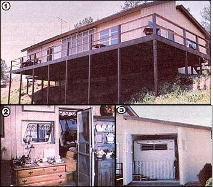

You can combine the freedom of an RV with the security of a home by building
[1]The Bunzer family's RV Chalet-in addition to looking as
conventional as and "normal" cottage-incorporates a simple
solar collector that provides most of the home's daytime
heat. [2] It's difficult to till where the firing morn ends anal
the Ii! begins. [3] The coach rests snugly against the partition
wall behind the "invisible" doors.
If you're like most folks, the energy shortages of the past few years have probably put a noticeable crimp in your lifestyle. It seems that not only has the cost of traveling become prohibitive, but the expense of just staying at home is slowly getting pretty hard to take, too.
And if you happen to be the owner of a large live-in recreational vehicle, the impact is worse . . . since a purchase that in all likelihood set you back to the tune of five figures has suddenly turned into a white elephant that's a bank-breaker to drive and almost equally expensive to store.
All's not lost, though, because RV enthusiast and ex-contractor George Bunzer has combined his two interests and come up with what appears to be a nearperfect solution to the knotty problem: the "RV Chalet". This unlikely-sounding union is actually a conventional house that's designed around a motor home . . . so that the idle coach becomes an integral-as well as useful -addition to the residence.
Bunzer's brainchild, in effect, gives a "rec vehicle" owner the capability of using the motor coach as often as he or she likes, but still provides a "home base" to return to. What's more, instead of requiring that the house be equipped with a budget-shattering full kitchen and bath, G.B.'s concept allows the Chalet owner-as an option-to utilize the existing facilities and the sleeping quarters within the RV, thus saving considerable construction expense.
In essence, the Bunzer bungalow is a 1,040-square-foot frame home, slightly less than half of which is made up of a comfortable, high-ceilinged living/dining area that's brightened by four clerestory windows and surrounded by a patio deck. The remaining portion of the house is no more than a step-down, concrete-floored garage, which-depending upon the size of the coach parked within-can provide enough extra space to accommodate a laundry room, a compact workshop, and an ample supply of storage cabinets.
A partition wall (or merely a railing, if that's what the owner desires) separates the living area from the RV storage room, and pocket doors are located to correspond with those in the vehicle (there are also pass-throughs at the motor home's windows to lend a more open feeling to the whole dwelling). The parking slab is equipped with water, power, and sewer hookups, and LP gas can be piped in from the outside to supply the range. Air conditioning and sanitary vents exhaust through ducts terminating at the building's roof.
In order to make the cottage look as conventional as possible, George has developed a set of swing-open "invisible" doors that hinge-believe it or not-on pipe nipples and floor flanges, and give the appearance of a completely solid ex terior wall when they're closed. If the building site will accommodate a "drive-through" setup, the concealed openings can be installed at each end of the structure, making a simple matter of RV parking or departure.
Naturally, the Chalet is fully insulated and incorporates a central heating system . . . though some owners have chosen to install a wood heater in the family room to replace the more costly conventional methods of heating. And, if the structure is appropriately situated (as is the south-facing Bunzer house), a simple solar collector can go along way toward eliminating the need for "artificial" heat altogether . . . particularly in moderate climates.
In fact, Mr. Bunzer installed a slightly smaller -than-recommended version of our corrugated collector (see MOTHER NO. 60, page 96) on his RV Chalet during the winter of 1979, and reports that the 84-square-foot panel is "more than adequate on the coldest days here in the mountains of North Carolina, and provides all the heat we need from 8 a.m. until about 2 p.m. Air from the discharge grille varies between 85° and 105°F, even when the outside temperature is hovering around the 18°F mark.
" Of course, anyone who doesn't intend to live in the cottage all year round can save a bit on construction costs by treating the RV berth as just a garage, and leaving it uninsulated. The basic design is actually very flexible, able both to meet varying local codes and to allow for particular circumstances. For example, the building plans call for a 26' X 40' structure, which will accommodate any motor home up to 33' long. However, the Chalet design can easily be lengthened or shortened as desired. In addition, many owners choose to install a full bath when building the house, and use the RV facilities as a private bathroom in conjunction with the coach's master bedroom . . . an option that's recommended by, and detailed in, the basic plans.
Perhaps best of all, though, an RV Chalet needn't be forever dependent on its resident motor home. If the recreational vehicle is sold, it's a fairly simple matter to raise the floor in the parking area, build in a full kitchen, and convert the remaining "new" space into a bedroom or two . . . thus transforming the hybrid home into a cozy-and conventional-cottage!
EDITOR'S NOTE: Those interested in a three-Page plans packet that details the construction of the Bunzers' RV Chalet should send a check or money order for $35 to George Bunzer, Dept. TMEN, Route 6, Box 384, Murphy, North Carolina 28906. Four sets of plans are $50, a materials list is $10, and complete detail drawingson the "invisible door" assembly are available for $5.00. Mr. Bunzer will also be happy to answer readers' questions about his Chalet if anyone who writes is kind enough to include a self-addressed stamped envelope with his or her request.
|
 [1] The Bunzer family's RV Chalet?in addition to looking as conventional as and ""normal"" cottage?incorporates a simple solar collector that provides most of the home's daytime heat. [2] It's difficult to till where the firing morn ends anal the Ii! begins. [3] The coach rests snugly against the partition wall behind the ""invisible"" doors. |
|
|